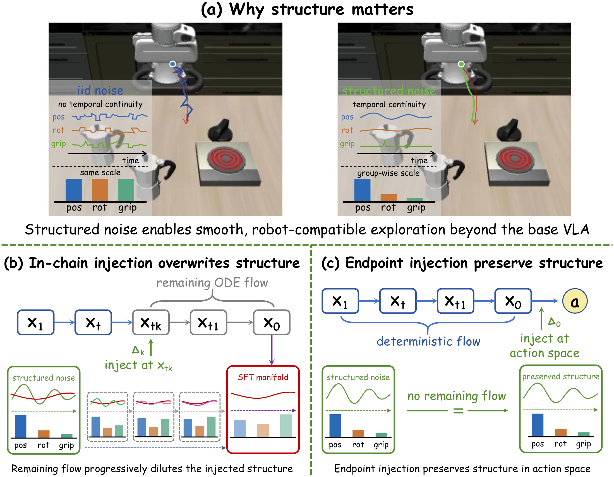
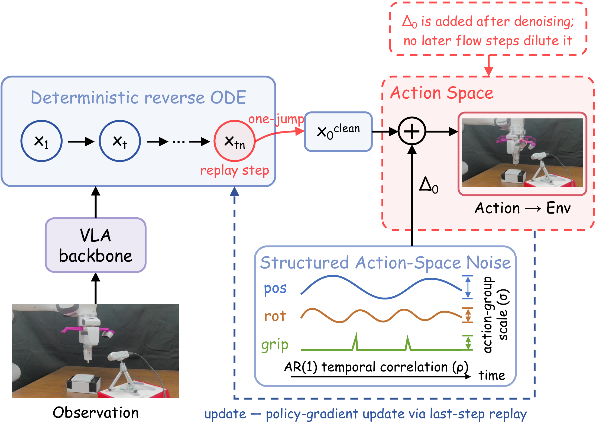
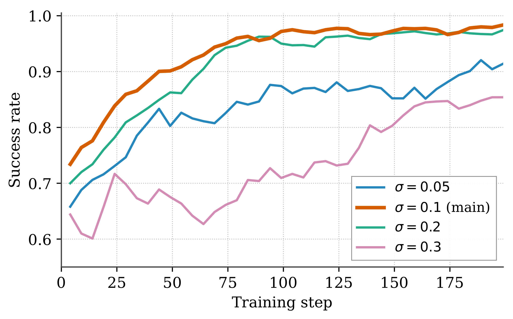
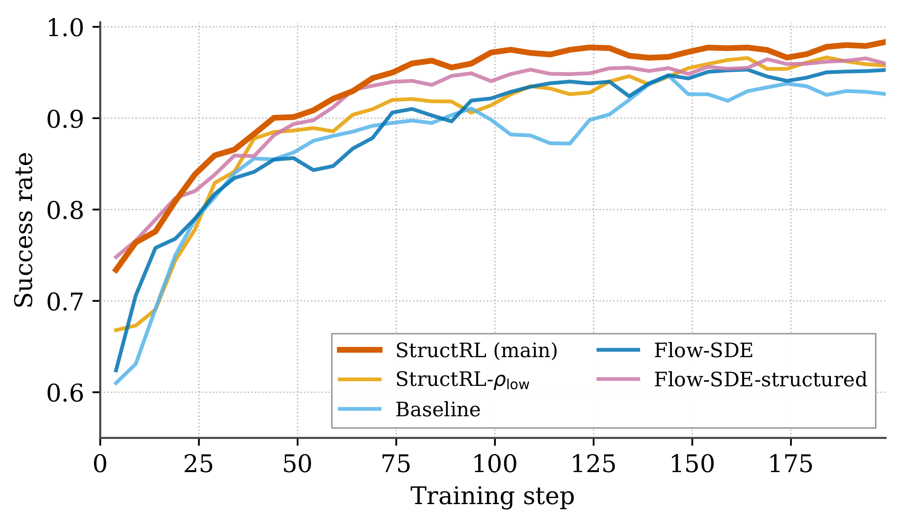
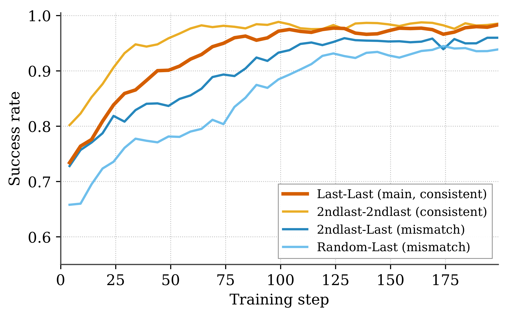
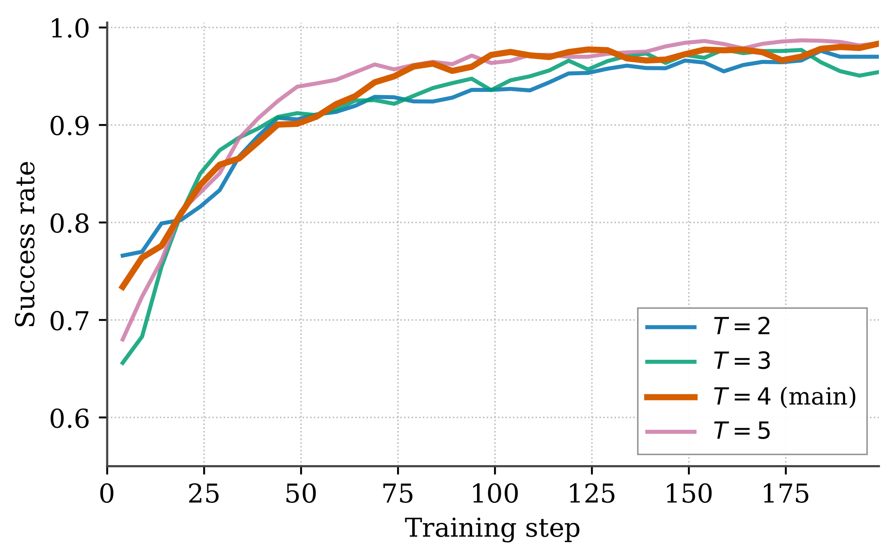

Action-space noise
Exploration is attached to the executed action, avoiding dilution.

Flow-based vision-language-action models are powerful robot policies, but their usual reinforcement-learning exploration lives inside a multi-step denoising chain. That makes it difficult to control the actions that are ultimately executed.
We identify structured noise dilution: temporal correlations and action-group scales injected partway through the chain can be weakened by the remaining denoising steps. StructRL instead places exploration directly at the action output, where its intended structure reaches the robot intact.
StructRL decodes a clean action chunk with a deterministic ODE, then adds noise directly in action space. The noise is smooth over the chunk and learns separate scales for position, rotation, and gripper controls.
Last-step replay supplies a tractable policy-gradient signal to the flow decoder, without assigning likelihoods to intermediate denoising states.

Exploration is attached to the executed action, avoiding dilution.
Smooth noise matches the temporal structure of action chunks.
Position, rotation, and gripper controls explore at appropriate magnitudes.
An efficient learning signal for flow-decoder post-training.
We evaluate StructRL on LIBERO and ManiSkill with three flow-based VLA backbones. Green marks StructRL; bold marks the best result within each backbone group.
| Backbone | Method | Spatial | Object | Goal | Long | Avg. |
|---|---|---|---|---|---|---|
| GR00T N1.5 | Few-shot SFT | 41.4 | 58.6 | 48.2 | 61.9 | 52.5 |
| πRL (Flow-SDE + PPO) | 96.6 | 100.0 | 93.8 | 95.6 | 96.5 | |
| Baseline | 96.2 | 99.4 | 91.8 | 95.6 | 95.8 | |
| StructRL | 99.2 | 100.0 | 97.6 | 99.0 | 99.0 | |
| π0 | Few-shot SFT | 65.3 | 64.4 | 49.8 | 51.2 | 57.6 |
| πRL (Flow-SDE + PPO) | 98.4 | 99.4 | 96.2 | 90.2 | 96.0 | |
| π-StepNFT | 93.5 | 98.0 | 83.7 | 86.7 | 90.5 | |
| Baseline | 98.8 | 99.0 | 97.2 | 90.2 | 96.3 | |
| StructRL | 98.8 | 99.8 | 98.4 | 91.8 | 97.2 | |
| π0.5 | Few-shot SFT | 84.6 | 95.4 | 84.6 | 43.9 | 77.1 |
| πRL (Flow-SDE + PPO) | 99.6 | 100.0 | 98.8 | 93.0 | 97.9 | |
| π-StepNFT | 97.8 | 100.0 | 98.2 | 79.8 | 94.0 | |
| Baseline | 99.4 | 100.0 | 93.8 | 86.0 | 94.8 | |
| StructRL | 99.6 | 99.8 | 98.8 | 90.2 | 97.2 |
| Backbone | Method | IND | Vision | Semantic | Execution | OOD Avg. |
|---|---|---|---|---|---|---|
| π0 | SFT | 38.4 | 32.6 | 8.4 | 13.2 | 18.1 |
| πRL (Flow-SDE + PPO) | 78.8 | 61.1 | 25.4 | 31.5 | 39.3 | |
| π-StepNFT | 79.2 | 69.1 | 49.1 | 33.1 | 50.4 | |
| Baseline | 84.1 | 79.4 | 63.3 | 59.1 | 67.3 | |
| StructRL | 87.8 | 80.0 | 64.2 | 56.2 | 66.8 | |
| π0.5 | SFT | 40.1 | 38.8 | 16.2 | 22.3 | 25.9 |
| πRL (Flow-SDE + PPO) | 90.9 | 68.0 | 34.5 | 45.4 | 49.3 | |
| π-StepNFT | 85.4 | 76.9 | 56.6 | 45.1 | 59.5 | |
| Baseline | 85.9 | 76.2 | 62.2 | 59.4 | 65.9 | |
| StructRL | 90.9 | 78.3 | 68.4 | 64.2 | 70.3 |




This section is intentionally left blank for the upcoming hardware experiments. No videos are included.